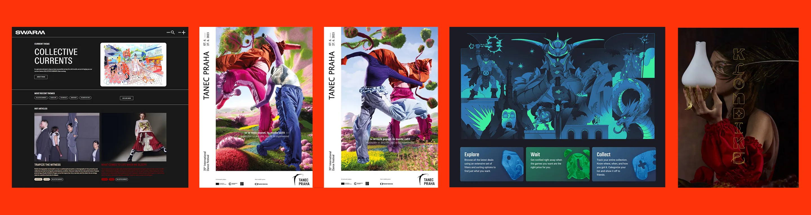

Zajistíme, že vaše firma vypadá skvěle a projekty dopadnou správně. Wicked Nice je kreativní studio v Praze – brand, vizuály, marketing a web. Od začátku do konce, osobně a bez zbytečností.


Máte skvělý nápad na projekt, ale nevíte, jak ho dotáhnout? Pomůžeme vám ho zrealizovat od A do Z, ať už jste značka, startup nebo sólo zakladatel. Necháme se na tom, co rozhoduje o úspěchu projektu: rozpočty, harmonogramy, briefy, sladění stakeholderů… a zajistíme, že finální výstup dopadne přesně tak, jak jste si ho představovali. Vy se soustřeďte na proč – my se postaráme o jak.
Se 7 lety zkušeností v kreativní produkci v brandingu, ilustraci, animaci a editoriální tvorbě rozumíme klientům i kreativcům. Jsme prodloužení vašeho kreativního mozku, které se navíc vyžívá v tabulkách. Lepší nápady, hladký proces a výsledek, pod který se na konci hrdě podepíšete.

Vaše značka je ten pocit, který si lidé pamatují, i když zapomněli, co jste říkali. Pomáháme značkám tvořit vizuální identity, díky kterým je ten pocit skvělý. Ať už jde o kompletní budování, promyšlený redesign nebo jen finální úpravu, když to ještě není úplně ono. Ne každá značka musí začínat od nuly – a my vám vždy řekneme, co víme, že potřebujete.
Rádi přebíráme kreativní odpovědnost a spolupracujeme s designéry, kteří vdechují život vizuálním příběhům. Ať už spouštíte něco nového, repositionujete se, nebo jste si právě uvědomili, že vaše logo bylo posledních pět let "tak akorát" – pomůžeme vám najít duši vaší značky a pak ji proměníme ve skutečnost.

Je jedno, jak skvěle web vypadá, když ho nikdo nenajde. Když v lese spadne strom… Ať už začínáte od nuly nebo vylepšujete existující web, naše SEO auditní nástroje a manuální kontrola nám rychle ukážou, které změny mají největší dopad, a navedou vás na správné oblasti, abyste se mohli rozhodovat s přehledem.
Žádné marketingové fráze ani upsellové nesmysly. Ať potřebujete jednorázový SEO audit nebo intenzivnější spolupráci, odejdete s pochopením toho, proč na optimalizaci pro vyhledávače záleží, jaké bezplatné nástroje používat pro monitoring – a jak psát obsah, ze kterého mají radost lidi i roboti.
Vaše značka mluví nejhlasitěji na vašem webu. Pomůžeme vám ji převést do konkrétních barevných palet, typografie, layoutů a celkového dojmu – v harmonický celek od landeru po kontaktní formulář. Díky zkušenostem s obsahovým marketingem zajistíme, že texty a obrázky nejsou jen do počtu, ale promění váš web v konvertující inbound kanál.
Díky našemu AI-first procesu vývoje webu stavíme a iterujeme rychle s minimálními náklady navíc. Ať teprve začínáte nebo už máte web, který potřebuje trochu péče – klidně ho s vámi postavíme v CMS a programovacích jazycích, které už používáte.


Producentka, kreativní ředitelka, projektová manažerka, zakladatelka magazínu… Vystřídala jsem spoustu rolí, ale moje posedlost zůstává stejná: aby dobré nápady přicházely na svět správně.
Díky více než dekádě ve studiích, agenturách a na vlastních projektech mám ostrý instinkt pro to, co funguje, a síť opravdu talentovaných kreativců. Jsem v úzkém kontaktu s nejlepšími českými designéry, ilustrátory, fotografy a kodéry – a spolupracovala jsem s nimi na desítkách náročných projektů pro známé značky. Vzdělání z UMPRUM, formování vším, co přišlo potom – to vše dostanete s Wicked Nice.
ZKUŠENOSTI

Spisovatel, pak marketér, teď vibe kodér extraordinér. Po letech ve fintechu, kde jsem pracoval na desítkách projektů na hraně inovací s nejlepšími lidmi, které Karlín nabízí, teď pomáhám firmám růst díky obsahu a SEO.
Stavím a spravuji weby, vytvářím AI agenty a neustále se učím nové věci. Ve Wicked Nice mohu všechny tyto dovednosti spojit a pomoci vám zazářit online.
ZKUŠENOSTI